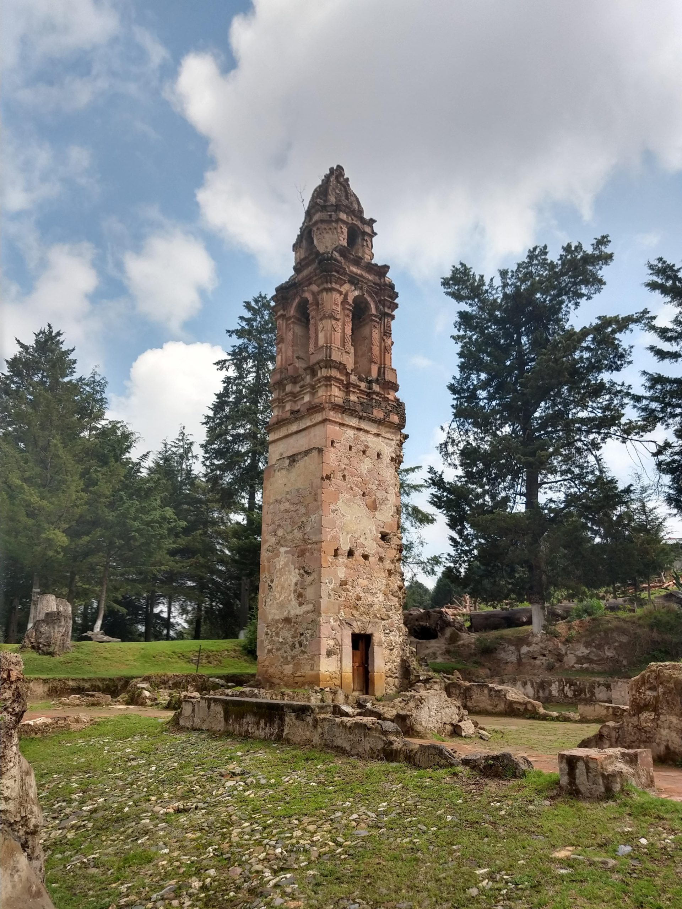
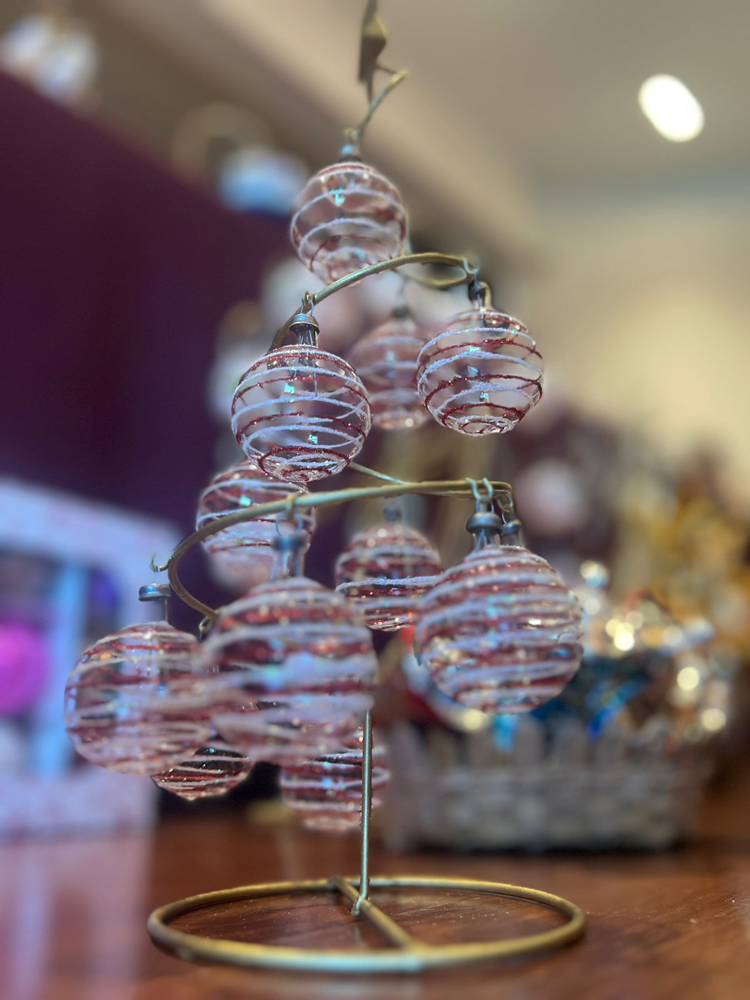

Tlalli Poxohuac — tierra esponjosa — el pueblo que se negó a morir.
Este hermoso Pueblo Mágico te espera para vivir la Navidad casi todos los días del año. Sus calles están rodeadas de talleres y comercios con esferas de vidrio soplado, artículos navideños y piezas decorativas. Tlalpujahua conserva raíces profundas, arquitectura virreinal y templos que cuentan siglos de historia.
Entre bosques de pino y oyamel, el pueblo se aferra al cerro. Cerca se encuentran el Parque Nacional Rayón (Campo del Gallo), ligado a los hermanos López Rayón, y la presa Brockman, favorita para paseos y fotografía. En temporadas y rutas hacia otras regiones de Michoacán también puedes planear visitas ligadas a la mariposa monarca, patrimonio natural de México.
Toponimia: del náhuatl tlalli (tierra) y poxohuac (esponjoso, fofo), interpretado como «tierra de tezontle» o «tierra esponjosa». La denominación «de Rayón» recuerda a los hermanos López Rayón. La historia reciente mezcla la bonanza minera del siglo XIX y XX con la tragedia de la inundación de 1937; de ahí la frase que resume el ánimo del lugar.
Clima: alrededor de 2,600 msnm y temperatura media cercana a los 14 °C, con lluvias en verano y otoño (datos típicos de la ficha turística estatal).
Gastronomía: barbacoa, corundas, uchepos, dulces regionales y pan tradicional. Artesanías: esferas, cantera, cerámica, textiles y más —recorrido obligado para quien busca piezas hechas a mano.
Para una lectura patrimonial oficial: INAH · Tlalpujahua de Rayón y gob.mx · SECTUR.

La Feria de la Esfera combina festejo, compra directa y demostraciones de taller. El pueblo enclavado en la sierra ofrece aire fresco y calles empedradas entre comercios de arte plumario, alfarería y fuentes de cantera.

Comentarios tomados de tu sitio anterior (2018–2022).
Nohemí — Dic. 2018«Muy bonito pueblo, muy recomendable; queda cerca del contexto de la mariposa monarca en la región.»
Anastasia Mtz — Dic. 2022«Pueblo mágico y gente amable; hospedaje en Quinta la Huerta y experiencias navideñas muy recomendables.»
Victor — Nov. 2020«Villa navideña eterna; los artesanos sorprenden con la variedad de decoraciones.»